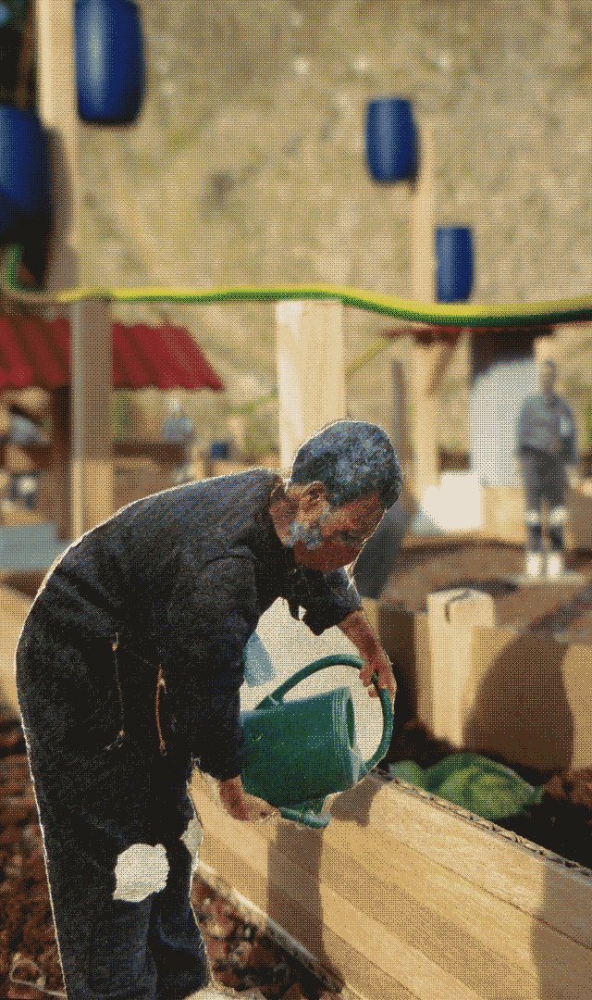
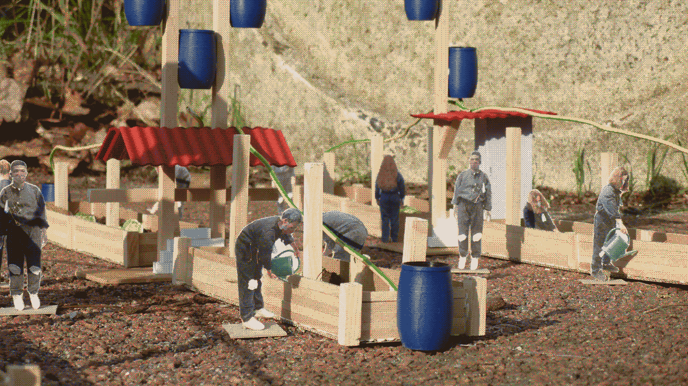
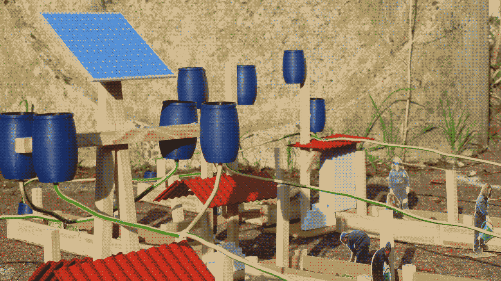
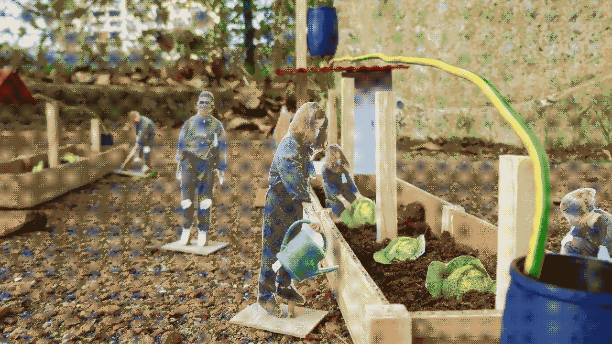
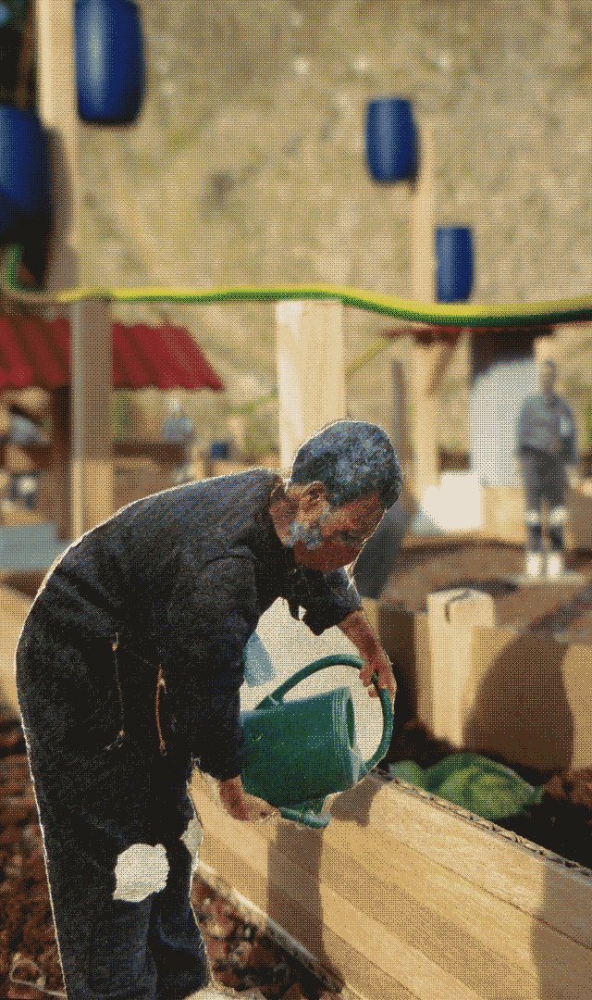
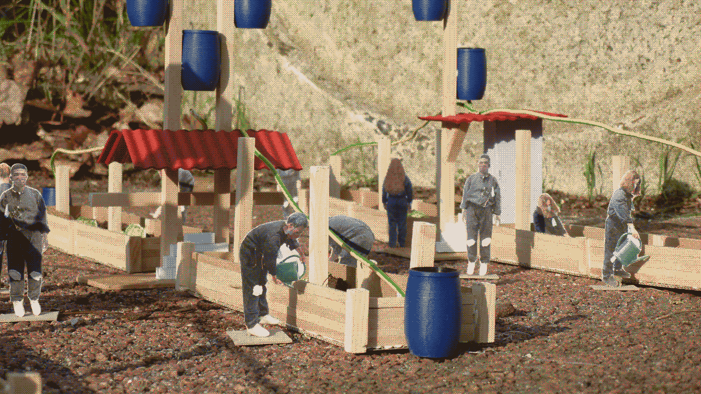
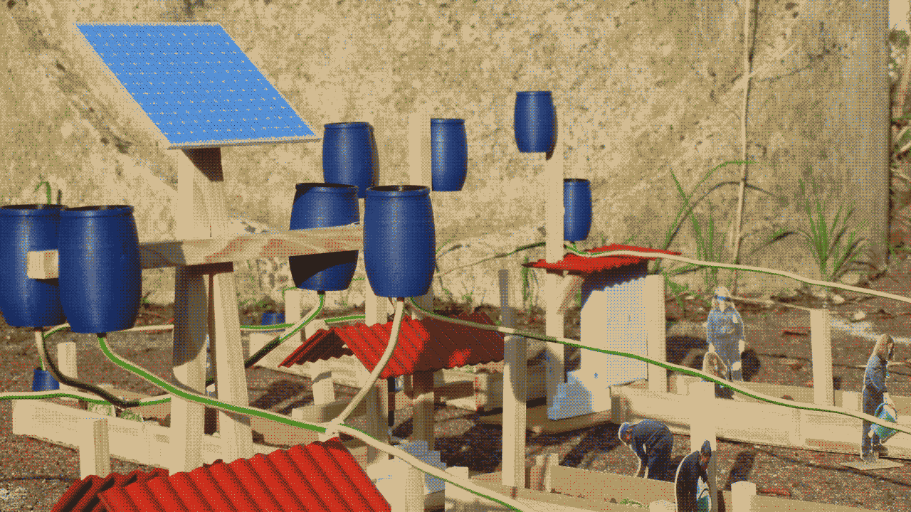
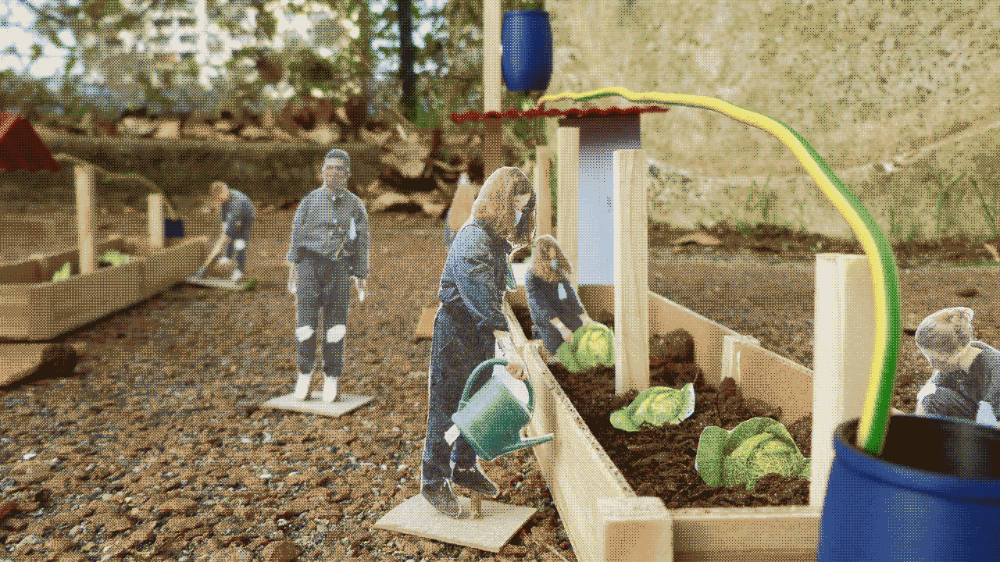

Effondrement
2022
Projet de design global en groupe :
Design graphique : Morgane Hancard
Design produit : Amaury Hardré
Projet encadré par Nastassja De Mourzitch, Gilles Le Bars et Dimitri Zéphir
Les jardins ouvriers d’Aubervilliers, un des derniers espace non bétonné, sont menacés par la construction d’une piscine pour les JO de Paris 2024. Afin d’aider les jardiniers à préserver ce lieu, nous avons décidé d’utiliser le chou d’Aubervilliers comme symbole de lutte et ainsi élaborer des outils. Nous avons conçu un calendrier d’actions permettant l’occupation progressive du parking attenant aux jardins et ainsi mettre en place une ZAD ouverte aux habitants. Ainsi chaque jour des structures sont érigées pour occuper l’espace et faire croître les jardins sur le béton.


 







contact
ah!
en